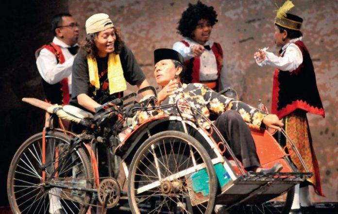

Ludruk: Seni Pertunjukan Tradisional Jawa Timuran
Ludruk adalah seni pertunjukan tradisional yang berasal dari Jawa Timur, khususnya daerah Surabaya dan sekitarnya. Seni ludruk menggabungkan elemen teater, musik, tari, dan komedi dalam satu pertunjukan yang menghibur. Pertunjukan ludruk seringkali mengangkat cerita-cerita lucu dan menghibur yang berisi sindiran-sindiran sosial atau kritik terhadap keadaan masyarakat pada masa itu.
Salah satu ciri khas dari pertunjukan ludruk adalah penggunaan bahasa Jawa dengan gaya bahasa yang khas dan lucu. Para pemain ludruk menggunakan bahasa yang dipenuhi dengan guyonan dan gurauan, sehingga pertunjukan ludruk tidak hanya menghibur tetapi juga mengandung pesan-pesan moral dan sosial yang dapat diambil oleh penonton. Pertunjukan ludruk biasanya dilakukan di panggung terbuka atau panggung sederhana yang disebut "kecrekan". Kecrekan ini menjadi tempat para pemain ludruk beraksi dan berinteraksi dengan penonton. Musik pengiring dalam pertunjukan ludruk menggunakan gamelan Jawa yang menghasilkan alunan musik yang khas dan mendukung suasana ceria dalam pertunjukan.
Selain menghibur, ludruk juga memiliki peran penting dalam melestarikan budaya Jawa Timuran. Pertunjukan ludruk seringkali mengangkat cerita-cerita dan nilai-nilai budaya Jawa yang kaya, sehingga menjadi sarana untuk menjaga dan memperkenalkan budaya Jawa kepada generasi muda. Dengan demikian, ludruk tidak hanya menjadi hiburan semata tetapi juga menjadi bagian penting dari warisan budaya yang harus dilestarikan. Pemerintah dan berbagai lembaga budaya di Jawa Timur aktif mendukung upaya pelestarian ludruk sebagai bagian dari warisan budaya daerah. Mereka mengadakan berbagai acara dan festival seni ludruk, serta memberikan dukungan dalam bentuk pelatihan dan pengembangan bagi para seniman ludruk. Hal ini bertujuan untuk memastikan bahwa ludruk tetap hidup dan berkembang, serta tetap menjadi bagian yang tak terpisahkan dari identitas budaya Jawa Timuran yang kaya dan beragam.
Meskipun perkembangan zaman telah membawa perubahan dalam budaya hiburan, namun seni ludruk masih tetap eksis di masyarakat Jawa Timur. Para seniman ludruk terus berusaha untuk mempertahankan dan mengembangkan seni mereka agar tetap relevan dan diminati oleh masyarakat. Dengan keunikan dan keistimewaannya, ludruk tetap menjadi salah satu kebanggaan budaya Jawa Timur yang patut dijaga dan dilestarikan keberlangsungannya.